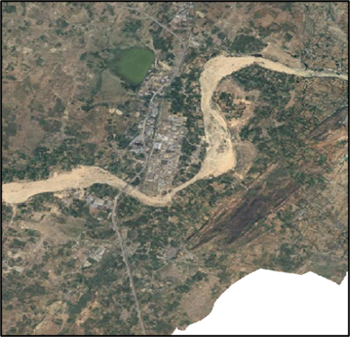

Data Acquisition
photo_camera
High-resolution satellite imagery covering study area
flight
Aerial photographs for detailed local analysis
calendar_month
Multi-temporal data to track changes over time

Pre-processing
contrast
Contrast adjustment to enhance water body visibility
noise_control_off
Noise reduction to improve image quality
filter
Spectral filtering to isolate water features